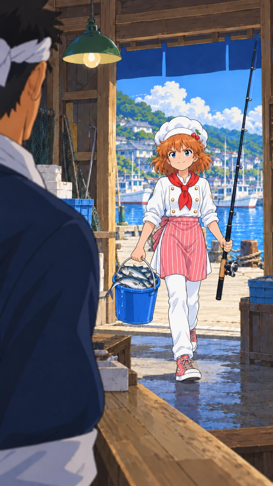
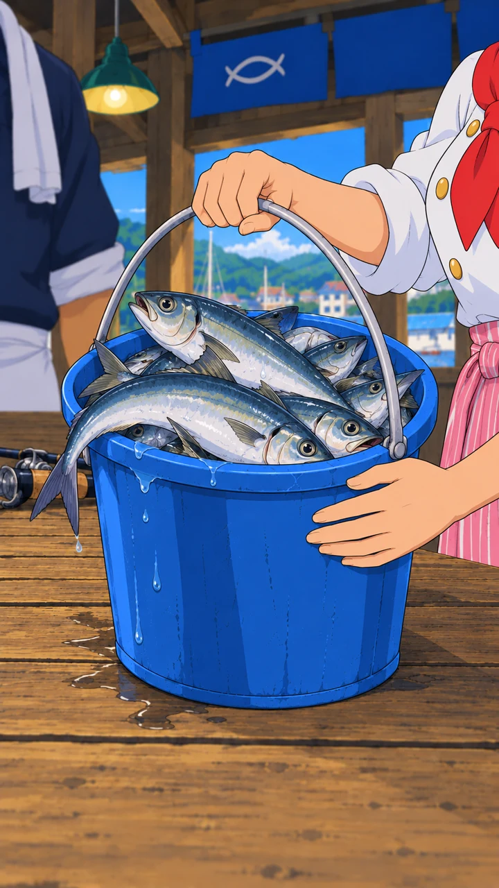

01 回來了｜遠景

女主角：「老闆，我回來了！」
從老闆肩後望向門口，女主角仍有要證明自己的勁。店內陰影對比明亮港口，先交代兩人距離。
保存原圖ミーミーの 買い出しラッシュ！魚屋篇
首次目標：成功釣到任意三條魚，可重複魚種。失敗不扣；挑戰進度與收藏分開保存。首輪魚池暫用竹筴魚、鯖魚、真鯛、比目魚，原本試玩版仍保留十二種漁獲。第三尾完整演出後，由玩家按「帶魚回去」。
本批只製作前三張，台詞供確認；料理與試吃尚未生圖，也尚未標記通關或開放自由模式。等待與搏鬥難度本輪沿用現有設定，後續再依首次三竿的實際長度調整。

女主角：「老闆，我回來了！」
從老闆肩後望向門口，女主角仍有要證明自己的勁。店內陰影對比明亮港口，先交代兩人距離。
保存原圖
女主角・畫外：「看吧！這些都是我親手釣的！」
用魚桶落桌呼應開場老闆放下釣具；整尾魚自然交疊，魚身由桶緣和其他魚支撐，尾巴順勢向外垂；以滿載而歸的戲劇效果為主，不逐條對應玩家漁獲。現階段靜態畫面，聲音稍後統一安排。
保存原圖老闆：「……還真讓妳釣到了。」
先承認事實、尚未服氣，為料理證明留出餘地。視線朝魚桶，表情微妙，不用大笑或誇張驚嚇。
保存原圖| 段落 | 鏡位與目的 |
|---|---|
| 女主角接話 | 側面雙人中景：「還沒完呢。接下來，才是我的本事！」讓主動權回到主廚。 |
| 料理轉場 | 回到餐廳廚房的短建立鏡頭，清楚交代料理地點，不在魚攤憑空出現炸鍋。 |
| 料理過程 | 俯視手部準備、側面下鍋的局部插鏡；使用已處理魚肉，不把魚種和釣獲數量畫死。 |
| 端出料理 | 由餐盤前景帶到女主角，料理有分量但保留簡潔 80 年代動畫畫風。 |
| 老闆試吃 | 筷子／咬下局部，接表情反應；吞下前不急著說話。 |
| 嘴硬地承認 | 較鬆的雙人鏡位，老闆肯定她的料理本事，關係緩和。 |
| 下次再來 | 較遠的收尾，留下後續委託的理由。接收藏成果、自由模式解鎖與返回主遊戲。 |
後續仍一次三張確認，依演出需要增減。首次料理成果先做圖文，不新增烹飪操作、認可度數值或未定案任務。